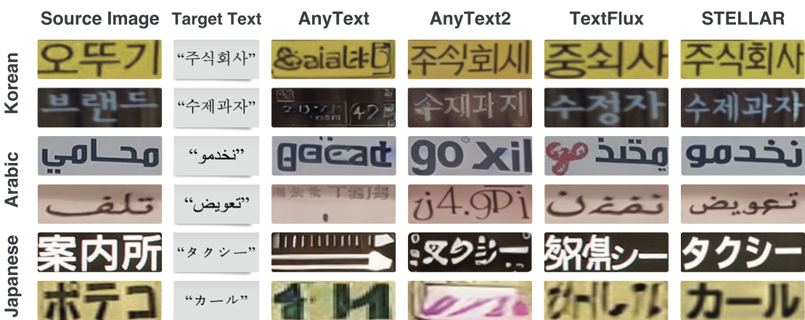
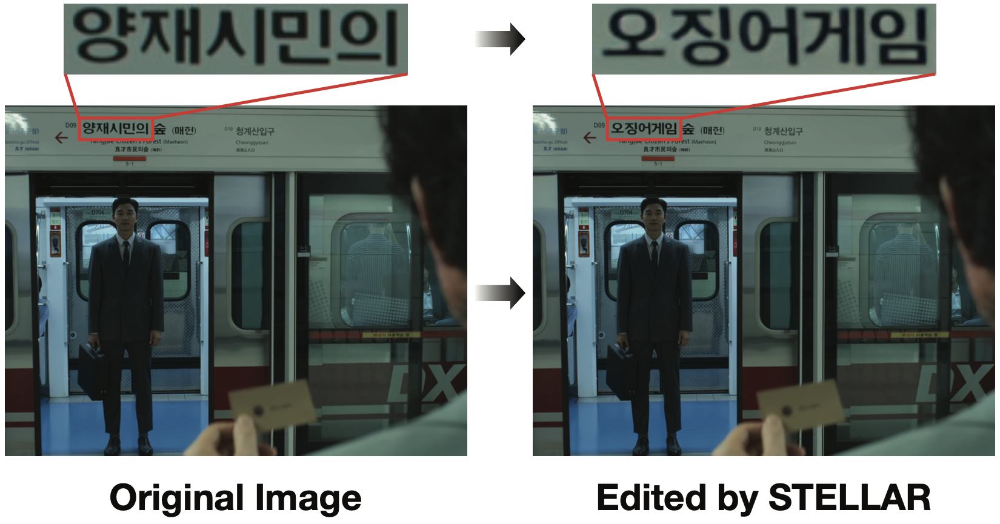
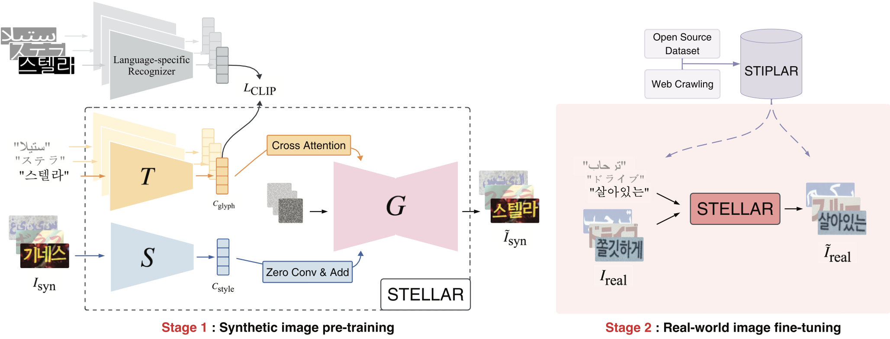
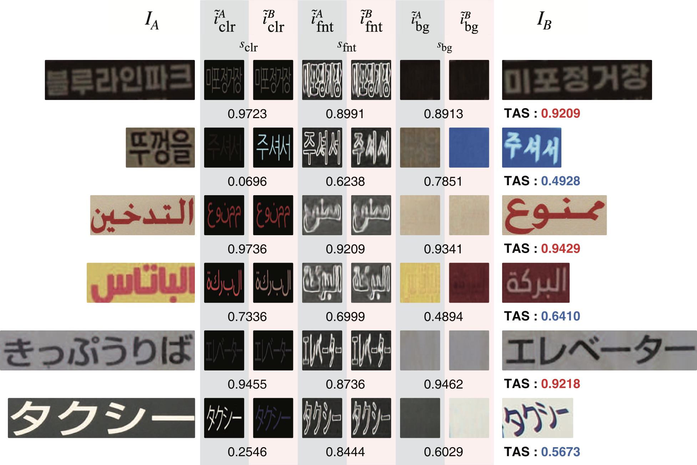
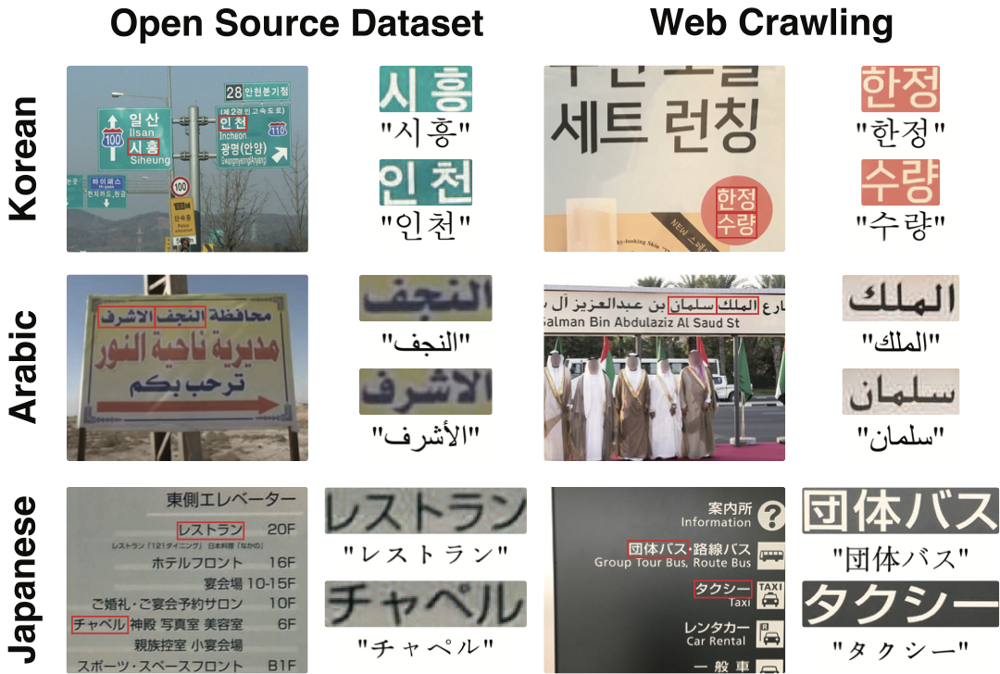

Qualitative Results
여러 언어와 스타일에서 텍스트를 교체해도 재질과 그림자가 자연스럽게 유지됩니다.

AAAI Workshop 2025 · Scene Text Editing
Industrial AI Lab PKNU

STELLAR(Scene Text Editing for Low-resource Languages)는 현장 간판과 인쇄물의 텍스트를 번역하면서도 글꼴, 조명, 배경 질감을 그대로 유지하도록 설계된 편집 모델입니다. 기존 Scene Text Editing 연구가 영어 위주 데이터에 의존하는 문제를 해결하기 위해 한국어·베트남어·태국어·아랍어 중심의 12만 쌍 synthetic pair와 4,200장 실사 이미지를 구축했습니다.
모델은 Layout Analyzer와 Text Editor로 이루어진 Dual-Stream Transformer 구조를 채택해 의미 신호와 스타일 신호를 분리 학습합니다. Diffusion 기반 Decoder는 레이아웃 존중형 positional prompt와 NeRF-inpsired light field를 사용해 자연스러운 합성을 수행하고, OCR 신뢰도가 낮으면 iterative refinement를 통해 품질을 높입니다. 사용자 스터디에서는 번역·교정 사이클이 평균 43% 단축됐으며, Character Accuracy와 스타일 보존 지표 모두에서 기존 영어 중심 baseline 대비 향상되었습니다.
Layout Analyzer는 Swin Transformer 기반 백본으로 텍스트 영역과 배경을 분리하고, 포인트 클라우드 형태의 positional prompt를 생성합니다. Text Editor는 Diffusion Decoder와 Dual-Stream Transformer를 결합해 새로운 문자를 렌더링한 뒤, 경량 NeRF 조명 모델과 혼합해 원본 장면에 블렌딩합니다. Consistency Feedback 모듈은 teacher OCR을 활용해 신뢰도를 측정하고, 저품질 프레임에 대해 추가 iterative pass를 수행합니다.

여러 언어와 스타일에서 텍스트를 교체해도 재질과 그림자가 자연스럽게 유지됩니다.

대형 리테일 광고판을 다국어로 변환한 TAS 사례.

STELLAR의 synthetic data generator로 확장한 STIP-LAR 실험 장면. 실사 간판을 3D 공간으로 투영해 로컬라이징 시나리오를 측정합니다.

논문 본문과 부록은 아래 링크에서 직접 확인할 수 있습니다.